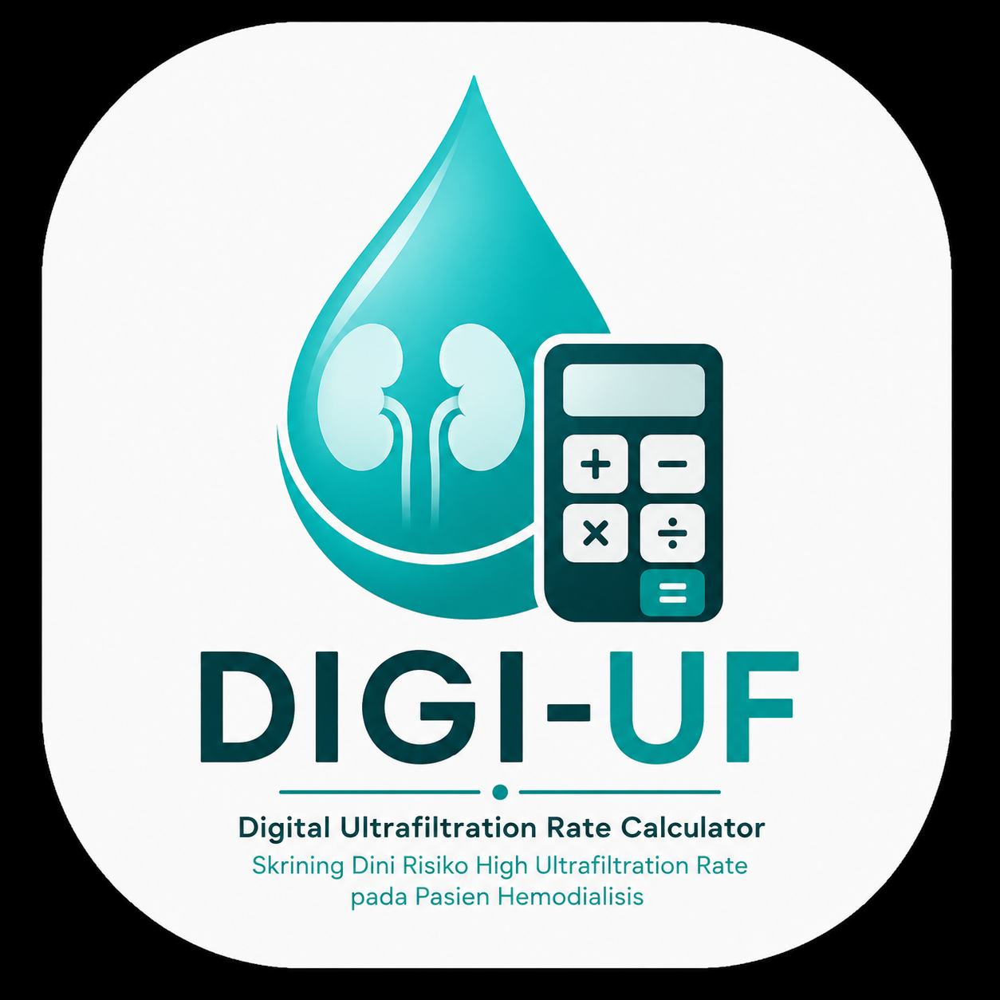

DIGI-UF
Digital Ultrafiltration Rate Calculator
Skrining UFR
Hitung dan skrining risiko High UFR
Data Pasien
Riwayat Skrining
Hasil skrining yang tersimpan
Tentang DIGI-UF
Informasi mengenai aplikasi
Apa itu DIGI-UF?
DIGI-UF (Digital Ultrafiltration Rate Calculator) merupakan alat bantu digital untuk menghitung Ultrafiltration Rate (UFR) dan melakukan skrining awal terhadap risiko High Ultrafiltration Rate pada pasien hemodialisis.
Rumus UFR
Satuan UFR: mL/kg/jam
Tujuan DIGI-UF
DIGI-UF dirancang sebagai alat bantu skrining untuk membantu mengidentifikasi hasil UFR yang mencapai atau melebihi threshold yang digunakan dalam penelitian.
Keterbatasan
- DIGI-UF merupakan alat bantu skrining, bukan alat diagnosis.
- Hasil tidak menggantikan penilaian klinis tenaga kesehatan.
- Threshold harus disesuaikan dengan dasar ilmiah dan protokol penelitian.
- Keputusan klinis tetap dilakukan oleh tenaga kesehatan yang berwenang.